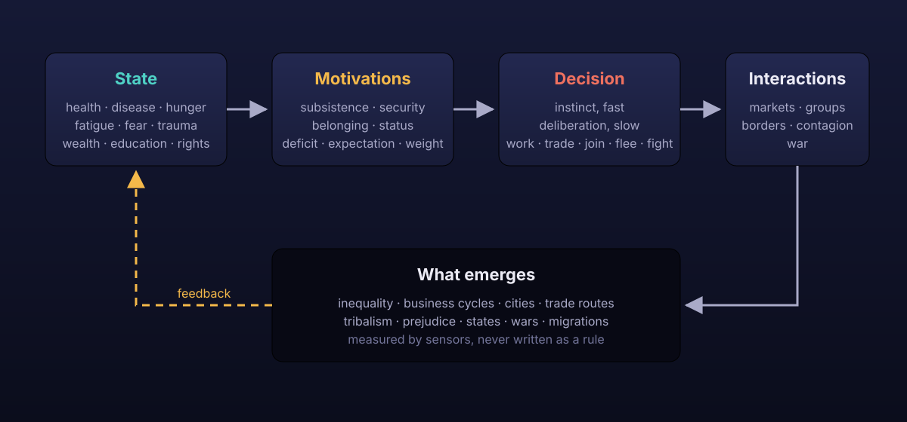
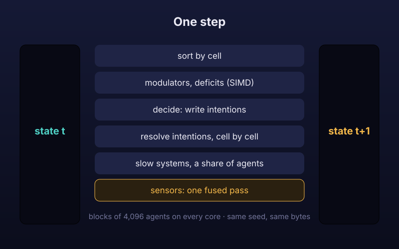
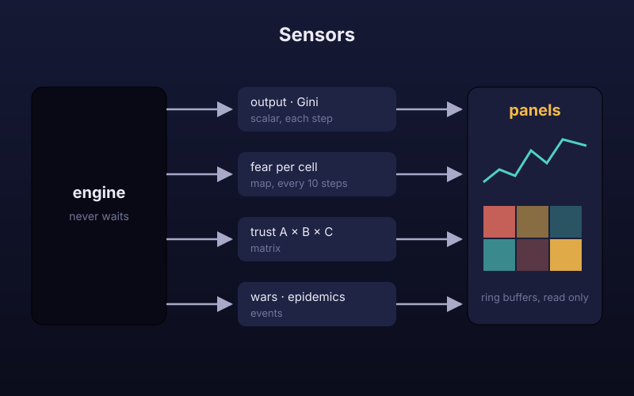

Motivations, not scripts
Each person weighs a few needs: subsistence, security, belonging, status. They learn whom to trust, and decide by deliberation or by instinct. Nothing else is written in.
A living world of autonomous people, watched as it runs.
MIT

Each person weighs a few needs: subsistence, security, belonging, status. They learn whom to trust, and decide by deliberation or by instinct. Nothing else is written in.
Health, disease, hunger, fatigue, fear, trauma, wealth, education and rights change how a person decides. Under stress, instinct takes over.
Abstract markers, learned trust, groups with leaders, states, borders, war and conquest. Tribalism and prejudice emerge, or do not, from the same rules.
Production, markets, trade between regions, money and credit, kept to the last unit: what is spent is what was earned. Trust lowers the cost of a trade; a border raises it.
Place a sensor on a region, a group or one person: output, inequality, trust between groups, fear, epidemics, fronts. A sensor never changes the world it measures.
The target is one million people at about 30 steps per second. The same seed gives the same world, byte for byte: go back to any step and watch it again.


agora is in design. The first version will be the engine's skeleton: people who move and trade, the sensors and a viewer. Follow the repository to see it come.
github.com/sachahjkl/agora
The flake has everything the build needs (Nix 2.27 or later: it brings its submodule).
git clone --recurse-submodules https://github.com/sachahjkl/agora